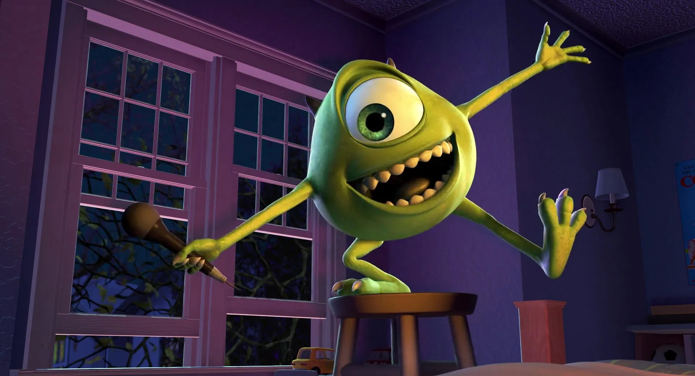

ABOUT
Michael "Mike" Wazowski is one of the two main characters in Monsters, Inc. He is a station runner and coach on the scare floor, and his nickname is Googley Bear.
CHARACTERISTICS
- He is a short, lime green monster.
- He has a single big eyeball and skinny limbs.
- He has a goofy, caring and loyal personality.